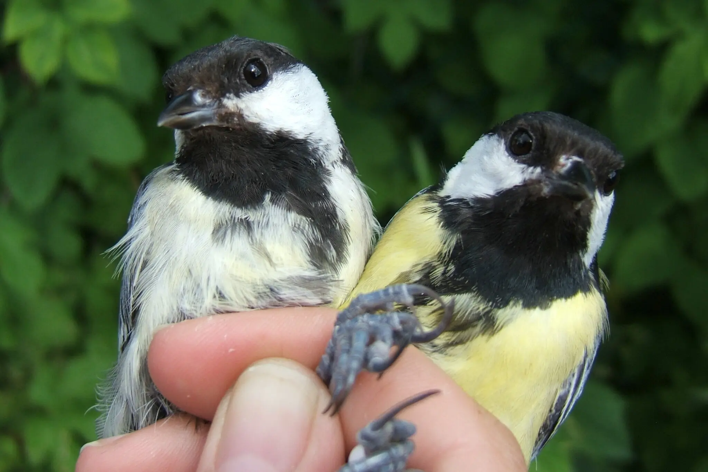

Recent studies show that certain feather pigments can help neutralize toxic pollution. It means darker, duller birds could have a survival advantage.
>Some popular city dwellers appear to be losing their colorful allure, and not just the dirty birds. According to a study published this summer in the journal Landscape and Planning that looked at 547 bird species in China, birds that live in cities are duller and darker on average than their rural counterparts. A similar conclusion emerged from an analysis of 59 studies published in March in Biological Reviews: Urban feathers are not as bright, with yellow, orange and red feathers affected most.
Studies show that melanin can bind to heavy metals like lead. That means toxic chemicals may be more likely to be stored in plumage in darker and duller birds. And that, in turn, can confer a survival advantage.
“The more melanin you accumulate, the better able you are to sequester these harmful compounds infeathers,” said Kevin McGraw, a biologist at Michigan State University who studies the colors of animals to understand the costs, benefits and evolution of visual signals.
Urban pollution affects avian colors in other ways, too. Research shows that, compared with rural plants, city trees store fewer natural pigments called carotenoids. And pollution is the likely reason. Carotenoids are produced by plants, algae and fungi. They’re what makes red peppers red and carrots orange.
When leaves are low on these pigments, the effects go up the food chain: Leaf-munching caterpillars become deficient in carotenoids, and so do caterpillar-munching birds.
“Birds cannot synthesize carotenoids,” said Kaspar Delhey, an ornithologist at the Max Planck Institute for Biological Intelligence near Starnberg, Germany. “They need to get them from food.”
Just as eating carotenoid-rich carrots can tint human skin, making it appear slightly tanned, feasting on carotenoid-rich caterpillars makes bird feathers yellow, orange and red. “If we don’t give them a diet that’s rich in carotenoids, they’re not going to be able to color their plumage with those pigments,” Dr. Delhey said.
Carotenoid deficiency is most likely the reason house finches in Phoenix are less red than their desert cousins, Dr. McGraw said. In one of his studies, 74 percent of urban female finches had no carotenoid-based coloration whatsoever, compared with just 48 percent of rural birds.
Similarly, an analysis of 23 studies showed that across Europe, great tits, small birds with bright-yellow, carotenoid-colored breasts, are paler in cities than in forests.
To test whether the dullness of urban tits was a result of their environment or, perhaps, genetics, researchers swapped 2-day-old chicks between city and rural nests in Malmo, Sweden, and the surrounding area. A year later, the birds raised in the city were less vividly yellow.
“It’s more or less a reflection of what they eat,” said Pablo Salmón, an ornithologist at the Institute of Avian Research in Wilhelmshaven, Germany, and the lead author of the Malmo study.
Because carotenoids also help to regulate the immune system, birds short on the pigments could be less healthy. A study of greenfinches, common garden visitors, showed that elaborately ornamented individuals tended to be in better shape.
The connections between colorful plumage and avian health are complex, Dr. Delhey said, and researchers are only beginning to untangle them. But for scientists like Dr. Salmón, the fading colors of urban birds are more than a matter of aesthetics. They also serve as a warning sign.
“It means that the habitat might be of lower quality,” he said.
This article initially appeared on The New York Times.